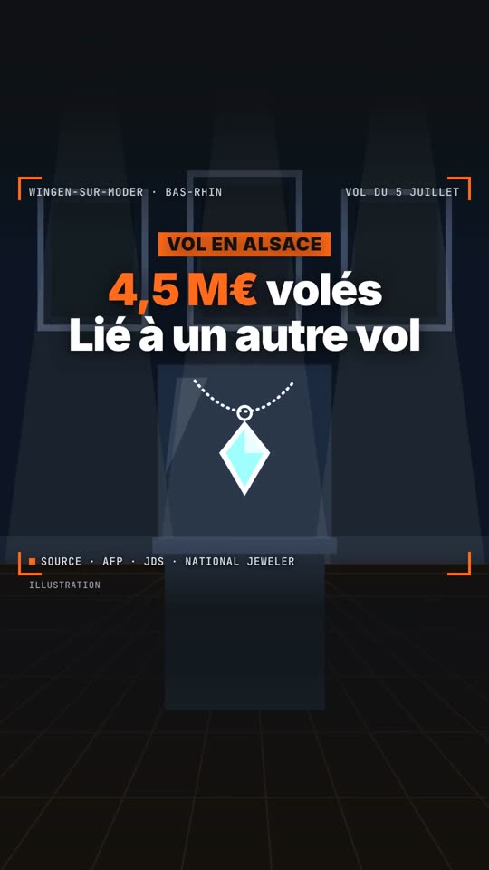
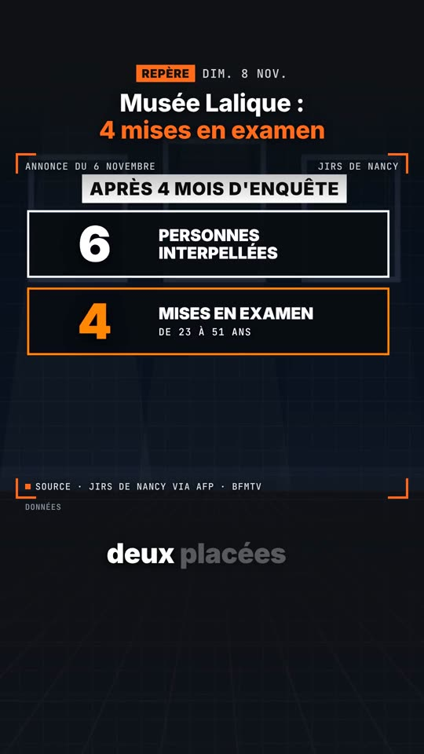

Your landmark in the news. Facts and sources, in one minute.
Repère is an independent, non-commercial news outlet published on TikTok: @repere.actus. Each French-language video explains one news story (France, world, sport) in about one minute, with its sources shown on screen and listed at the end.



Editorial standards
- No misinformation: every fact is checked against at least two independent sources, or one primary official source. Any doubtful fact is removed.
- Neutrality: no political stance; figures from each side are shown together and every statement is attributed.
- Transparency: sources on screen, full list at the end of the video and in the pinned comment.
- Protection of people: no full name of a suspect, no identifiable minor, presumption of innocence.
- Disclosed AI: voice and illustrations are AI-generated; every video carries TikTok's "AI-generated content" label.
The Repère publishing tool
Repère uses an internal tool to publish its videos to its own TikTok account through TikTok's official APIs (Login Kit, Content Posting API, Display API). The tool is not offered to the public and only posts to the @repere.actus account that authorized it.
- The editorial pipeline prepares the video, its verified facts, caption and sources.
- The video lands in a private newsroom page where the editor watches it and checks every fact.
- The editor approves it, requests a correction, or rejects it.
- Only an approved video is posted to @repere.actus, with its caption, hashtags and the AI-generated content label (Direct Post).
- Statistics of published videos (views, likes, comments, shares) help choose and improve future stories.
TikTok data we use
| Scope | Purpose |
|---|---|
user.info.basic | Show the connected account's name, to confirm the tool posts to @repere.actus. |
video.upload, video.publish | Upload and publish the videos approved by the editor, with caption and AI label. |
video.list | Read statistics of videos published by the Repère account, to improve future videos. |
No data about other TikTok users is collected. See the privacy policy.